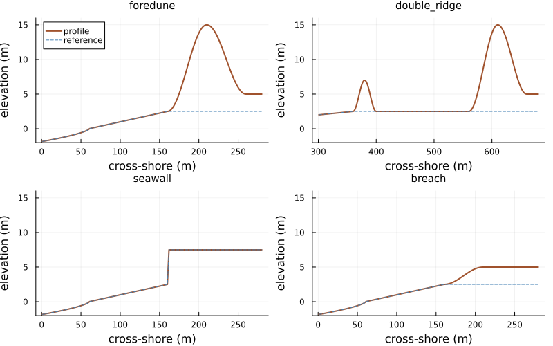
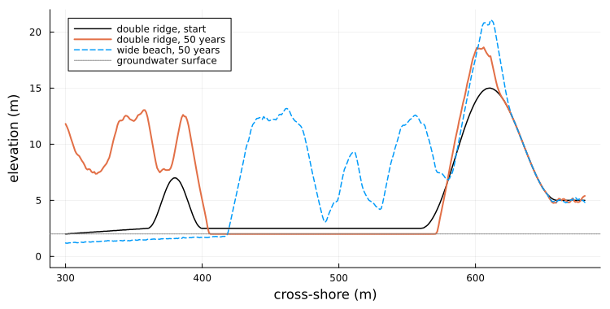
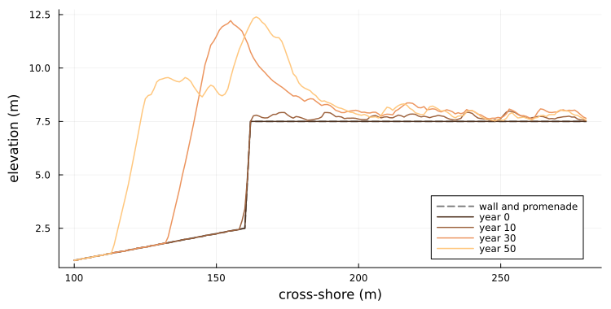
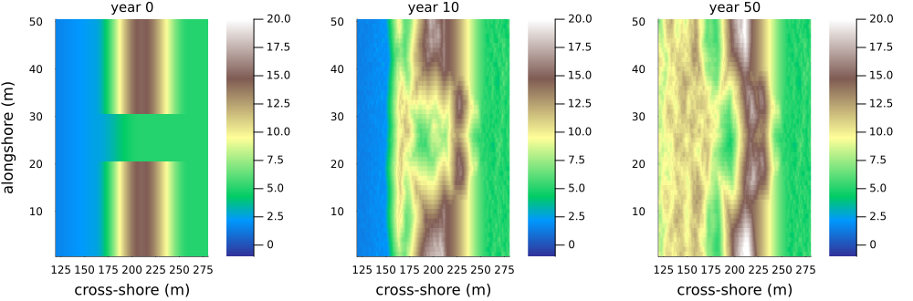

Dune landforms
Simon Frost
- Overview
- Landforms from pieces
- Fifty years on each landform
- An embryo dune starves the foredune
- Sand piles against a seawall
- A breach heals from its flanks
- A landform of one’s own
- Summary
Overview
The coastal dune model of Teixeira et al. (2023) (vignette 20) starts from one shape: a beach rising to a single foredune with a plateau behind it. Real coasts have other shapes. An embryo dune may grow on the beach in front of the foredune, a seawall may stand where a dune would be, and a dune may be breached. In this package a profile is built by joining pieces, so each of these is a short composite of the same pieces.
The source runs none of these landforms. Running them tests the model’s behaviour, not its fidelity: does it do what geomorphology leads one to expect on shapes it was not tuned for? One addition is needed: a seawall must not erode. So the model has a non-erodible layer, hard, below which neither wind, avalanches nor the sea remove sand, and on which plants grow only once sand covers it. It is empty by default, and the source’s scenarios run exactly as before.
ENV["GKSwstype"] = "100"
using EcologicalCellularAutomata
using CellularAutomataCore
using Plots
using Random
using StatisticsLandforms from pieces
dune_landform(; form) builds four shapes, each offshore + beach + 120 metres long:
- the source’s foredune: shoreface, beach, a ridge rising to 15 m, and a plateau;
- a double ridge: an embryo dune 40 m wide and 7 m high on the wide beach, with a level dune slack 160 m long between it and the foredune;
- a seawall: the beach ends at a wall rising to 7.5 m, with a promenade behind it in place of the dune and plateau;
- a breach: the foredune lowered to a trough rising only to the plateau’s 5 m.
Each is a composite of pieces. The kind of each piece says how the model treats it. The sea’s reference surface levels pieces of kind :dune and everything landward of them, and pieces of kind :seawall and :promenade are non-erodible:
forms = (foredune=dune_landform(; beach=100), double_ridge=dune_landform(; form=:double_ridge),
seawall=dune_landform(; form=:seawall, beach=100),
breach=dune_landform(; form=:breach, beach=100))
map(f -> join(unique(profile_kinds(f, length(f))), " * "), forms)(foredune = "shoreface * beach * dune * hinterland", double_ridge = "shoreface * beach * dune * slack * hinterland", seawall = "shoreface * beach * seawall * promenade", breach = "shoreface * beach * dune * hinterland")plot([begin
x = name === :double_ridge ? (301:680) : (1:280)
plot(x, f.heights[x]; lw=2, color=:sienna, label="profile", title=string(name),
titlefontsize=10, ylims=(-2, 16), legend=name === :foredune ? :topleft : false)
plot!(x, reference_profile(f).heights[x]; ls=:dash, color=:steelblue,
label="reference")
end
for (name, f) in pairs(forms)]...; layout=(2, 2), size=(800, 500),
xlabel="cross-shore (m)", ylabel="elevation (m)")
Figure 1: The four landforms (land to the right): the source’s foredune on the narrow beach, the double ridge on the wide beach (shown from 300 m), the seawall and promenade, and the breached foredune. Dashed lines are the reference surfaces the sea works towards.
problem(:dune_formation; scenario) sets each up: :double_ridge on the wide beach, :seawall on the narrow one, and :blowout, the narrow beach with the breach in the middle fifth of the rows and the source’s foredune in the rest. A landform keyword accepts any composite, or one for each row.
Fifty years on each landform
Two runs of 50 years on each landform, with hops of 5 cells (the source’s saltation representation), beside the source’s narrow and wide beaches. The runs use 20 rows of 1 m, or 50 for the blowout so that the breach is 10 m wide. Each run records the surface every ten years.
function landform_run(scenario; rows=20, years=50, seed=1)
prob = problem(:dune_formation; scenario, alongshore=rows, years, seed)
p, u, h = prob.p, deepcopy(prob.u0), prob.p.h
snaps = [u.topo .* h]
intact = true
for t in 1:(50years)
dune_step!(u, p, t, Random.Xoshiro(hash((prob.seed, t, :dune))))
t % 500 == 0 && push!(snaps, u.topo .* h)
intact &= all(u.topo .>= u.hard)
end
return (; snaps, intact, cover=min.(u.pioneer .+ u.stabilizer, 1))
end
cases = [(s, seed) for s in (:narrow, :wide, :double_ridge, :seawall, :blowout) for seed in 1:2]
runs = Dict(zip(cases,
fetch.([Threads.@spawn landform_run(s; seed, rows=s === :blowout ? 50 : 20)
for (s, seed) in cases])))
volume(z, cols) = sum(max.(z[:, cols] .- 3, 0)) / size(z, 1) # m³/m above 3 m
gain(r, cols) = volume(r.snaps[end], cols) - volume(r.snaps[1], cols)
sand(r, cols) = sum(r.snaps[end][:, cols] .- r.snaps[1][:, cols]) / size(r.snaps[1], 1)
nothingAn embryo dune starves the foredune
The double ridge has the same domain as the wide beach, and its foredune occupies the same columns (561 to 680). The two can be compared column for column:
slack = 421:560 # all but the 20 m in the embryo dune's lee
[(seed=seed, foredune_gain_wide=round(Int, gain(runs[(:wide, seed)], 561:680)),
foredune_gain_double=round(Int, gain(runs[(:double_ridge, seed)], 561:680)),
embryo_and_slack_gain=round(Int, gain(runs[(:double_ridge, seed)], 361:560)),
embryo_crest=round(maximum(mean(runs[(:double_ridge, seed)].snaps[end][:, 361:400]; dims=1));
digits=1),
slack_lowered_by_year_10=round(mean(runs[(:double_ridge, seed)].snaps[1][:, slack]) -
mean(runs[(:double_ridge, seed)].snaps[2][:, slack]);
digits=2),
slack_lowered_by_year_50=round(mean(runs[(:double_ridge, seed)].snaps[1][:, slack]) -
mean(runs[(:double_ridge, seed)].snaps[end][:, slack]);
digits=2),
slack_plant_cover=round(mean(runs[(:double_ridge, seed)].cover[:, slack]); digits=2))
for seed in 1:2]2-element Vector{@NamedTuple{seed::Int64, foredune_gain_wide::Int64, foredune_gain_double::Int64, embryo_and_slack_gain::Int64, embryo_crest::Float64, slack_lowered_by_year_10::Float64, slack_lowered_by_year_50::Float64, slack_plant_cover::Float64}}:
(seed = 1, foredune_gain_wide = 258, foredune_gain_double = 87, embryo_and_slack_gain = 221, embryo_crest = 11.4, slack_lowered_by_year_10 = 0.5, slack_lowered_by_year_50 = 0.5, slack_plant_cover = 1.0)
(seed = 2, foredune_gain_wide = 281, foredune_gain_double = 89, embryo_and_slack_gain = 202, embryo_crest = 12.8, slack_lowered_by_year_10 = 0.5, slack_lowered_by_year_50 = 0.5, slack_plant_cover = 1.0)The embryo dune intercepts the sand. It grows from 7 m to 11 to 13 m, and the foredune behind it gains about a third of what it gains on the open wide beach. The two ridges together gain more than the single foredune, 308 and 291 m³/m against 258 and 281. The open wide beach grows embryo dunes of its own (the dashed line in the figure below), as vignette 20 notes, but starting from bare sand they let more of it through to the foredune.
The bare slack between them loses sand. Within ten years it is lowered by about half a metre: from 2.5 m to the groundwater surface, which the model puts at 0.8 times the reference surface, 2.0 m. Below that the sand is wet and the wind cannot lift it. Deflation down to the water table is how dune slacks form, and the model does it without being told. It stays there for the rest of the run, apart from the 20 m in the embryo dune’s lee, which sand buries. On the surface it leaves, moving little, stabilizing plants spread from their neighbours until they cover nearly all of it.
x = 300:680
plot(x, vec(mean(runs[(:double_ridge, 1)].snaps[1]; dims=1))[x]; color=:black, lw=1.5,
label="double ridge, start", xlabel="cross-shore (m)", ylabel="elevation (m)",
legend=:topleft, size=(750, 380), ylims=(-1, 22), left_margin=4Plots.mm,
bottom_margin=4Plots.mm)
plot!(x, vec(mean(runs[(:double_ridge, 1)].snaps[end]; dims=1))[x]; color=2, lw=2,
label="double ridge, 50 years")
plot!(x, vec(mean(runs[(:wide, 1)].snaps[end]; dims=1))[x]; color=1, lw=1.5, ls=:dash,
label="wide beach, 50 years")
hline!([2.0]; color=:gray, ls=:dot, label="groundwater surface")
Figure 2: Mean profiles after 50 years on the wide beach with and without an embryo dune (one run each). The embryo dune grows and the foredune behind it grows less; the slack between them deflates to the groundwater surface (2 m, dotted), except in the embryo dune’s lee.
Sand piles against a seawall
On the narrow beach, a seawall stands where the dune foot would be:
[(seed=seed, wall_intact=runs[(:seawall, seed)].intact,
upper_beach_sand=round(Int, sand(runs[(:seawall, seed)], 131:160)),
promenade_sand=round(Int, sand(runs[(:seawall, seed)], 163:280)),
promenade_depth_first_20_m=round(mean(runs[(:seawall, seed)].snaps[end][:, 163:182] .-
runs[(:seawall, seed)].snaps[1][:, 163:182]);
digits=1),
dune_gain_without_wall=round(Int, gain(runs[(:narrow, seed)], 161:280)))
for seed in 1:2]2-element Vector{@NamedTuple{seed::Int64, wall_intact::Bool, upper_beach_sand::Int64, promenade_sand::Int64, promenade_depth_first_20_m::Float64, dune_gain_without_wall::Int64}}:
(seed = 1, wall_intact = 1, upper_beach_sand = 219, promenade_sand = 109, promenade_depth_first_20_m = 3.4, dune_gain_without_wall = 273)
(seed = 2, wall_intact = 1, upper_beach_sand = 235, promenade_sand = 108, promenade_depth_first_20_m = 3.1, dune_gain_without_wall = 272)The wall and promenade are never eroded. Sand blown off the beach piles against the wall, and plants colonise the pile. In 50 years a dune 11 to 15 m high grows on the upper beach in front of the wall, higher than the wall itself, and it holds most of the sand: 219 to 235 m³ per metre, against about 108 on the promenade. But plenty gets past, and in 50 years the promenade lies under more than 4 m of sand against the wall and about 3 m on average over its first 20 m, the familiar nuisance of sand on seafront boulevards; the depth there moves up and down from decade to decade. A dune in front of a seawall shelters what lies behind it only in part, here without any rule written for it.
x = 100:280
z = runs[(:seawall, 1)].snaps
plot(x, dune_landform(; form=:seawall, beach=100).heights[x]; color=:gray, ls=:dash, lw=2,
label="wall and promenade", xlabel="cross-shore (m)", ylabel="elevation (m)",
legend=:bottomright, size=(750, 380), left_margin=4Plots.mm, bottom_margin=4Plots.mm)
for (k, y) in enumerate((0, 10, 30, 50))
plot!(x, vec(mean(z[y ÷ 10 + 1]; dims=1))[x]; color=cgrad(:copper)[k / 4], lw=1.5,
label="year $y")
end
plot!()
Figure 3: Mean profile at the seawall after 0, 10, 30 and 50 years (one run), against the non-erodible surface (dashed). A dune builds against the wall, higher than it, and sand passes it onto the promenade.
A breach heals from its flanks
In the blowout scenario the foredune is breached in 10 of 50 rows, down to 5 m. The table gives the crest height in the breach every ten years, and the dune’s gain in volume in the breached and intact rows:
gap, rest = 21:30, [1:20; 31:50]
crest(z, rows) = mean(maximum(z[rows, 161:260]; dims=2))
rows_of(r, rows) = (; snaps=[s[rows, :] for s in r.snaps])
[(seed=seed,
breach_crest_by_decade=[round(crest(z, gap); digits=1) for z in runs[(:blowout, seed)].snaps],
intact_crest=round(crest(runs[(:blowout, seed)].snaps[end], rest); digits=1),
gain_breach=round(Int, gain(rows_of(runs[(:blowout, seed)], gap), 161:280)),
gain_intact=round(Int, gain(rows_of(runs[(:blowout, seed)], rest), 161:280)),
gain_without_breach=round(Int, gain(runs[(:narrow, seed)], 161:280)))
for seed in 1:2]2-element Vector{@NamedTuple{seed::Int64, breach_crest_by_decade::Vector{Float64}, intact_crest::Float64, gain_breach::Int64, gain_intact::Int64, gain_without_breach::Int64}}:
(seed = 1, breach_crest_by_decade = [5.0, 11.9, 15.0, 16.6, 17.5, 17.8], intact_crest = 19.0, gain_breach = 695, gain_intact = 254, gain_without_breach = 273)
(seed = 2, breach_crest_by_decade = [5.0, 11.8, 14.3, 14.0, 14.4, 14.8], intact_crest = 18.0, gain_breach = 678, gain_intact = 264, gain_without_breach = 272)The breach fills within ten years, to a crest of about 12 m. After fifty its crest stands at 15 to 18 m, above the dune’s original 15 m but 1 to 3 m below the intact rows, which have grown too. Most of the sand comes from its flanks: the walls of the breach stand 10 m above its floor, far steeper than the angle of repose, and avalanche into it. The breached rows gain more than two and a half times as much as the intact ones, and the intact rows gain a little less than the dune does on the same beach without a breach. Over all rows the dune gains more with the breach than without it, about 340 m³/m against 270 on both seeds: the breach is a trap for the sand blown off the beach.
plot([heatmap(120:280, 1:50, z[:, 120:280]; c=:terrain, clims=(-1, 20), title="year $y",
titlefontsize=10, xlabel="cross-shore (m)", ylabel=y == 0 ? "alongshore (m)" : "")
for (y, z) in zip((0, 10, 50), runs[(:blowout, 1)].snaps[[1, 2, 6]])]...;
layout=(1, 3), size=(1000, 330), left_margin=4Plots.mm, bottom_margin=5Plots.mm)
Figure 4: Elevation around the breached foredune at the start and after 10 and 50 years (one run; rows alongshore, cross-shore from 120 m).
Real breaches often grow into blowouts instead. They do so because the breach steers and speeds up the wind, which then scours it. By default the model has no such steering: slabs travel straight along their row whatever the topography. Vignette 28 adds a wind steered by the topography, from the linear theory of flow over low hills; the breach still fills, about as fast at first.
A landform of one’s own
Any composite can be run. A common Dutch coastal defence, the dune-fronted dike, puts a small dune in front of a seawall. Here it is, with the seawall kept non-erodible behind a dune 40 m wide:
own = shoreface_segment(60) * slope_segment(100, 0, 2.5) * ridge_segment(40, 2.5, 8, 2.5) *
slope_segment(2, 2.5, 7.5; kind=:seawall) * flat_segment(78, 7.5; kind=:promenade)
prob = problem(:dune_formation; landform=own, alongshore=4, years=1)
(cells=size(prob.u0.topo), hard_cells=count(>(typemin(Int32)), prob.u0.hard[1, :]),
run_up_slope=prob.p.slope)(cells = (4, 280), hard_cells = 80, run_up_slope = 0.025)The run-up slope comes from the beach pieces, 2.5 m over 100 m. The source uses 3 m over the beach width, and the source’s scenarios keep that.
Summary
| landform | expected | in the model |
|---|---|---|
| embryo dune on the beach | intercepts sand, starving the foredune | foredune gains under a third; slack deflates to the water table, and plants then cover it |
| seawall | sand piles against it and blows onto the promenade | a dune higher than the wall in front of it, which holds most of the sand; more than 4 m on the promenade against the wall |
| breached foredune | may heal or grow into a blowout | mostly refilled within a decade by avalanching; no growth, even with the wind steered (vignette 28) |
Teixeira, Manuel, Erik M. Horstman, and Kathelijne M. Wijnberg. 2023. “Conceptualizing Aeolian Sediment Transport in a Cellular Automata Model to Simulate the Bio-Geomorphological Evolution of Beach–Dune Systems.” Journal of Marine Science and Engineering 11 (7): 1278. https://doi.org/10.3390/jmse11071278.